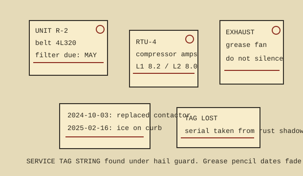

| Unit | Tag text | Reading |
|---|---|---|
| R-2 | BELT 4L320 / FILTER DUE MAY | Belt dust on left sheave, no squeal at start. Filter panel screw replaced with mismatched brass. |
| RTU-4 | COMPRESSOR AMPS L1 8.2 L2 8.0 | Numbers repeated on two tags a year apart; likely normal for this unit, not a copied mistake. |
| E-3 exhaust | DO NOT SILENCE | Grease fan rattles because the curb is cracked. Silencing it caused kitchen odors in stair B. |
| Unknown curb | TAG LOST | Serial recovered from rust shadow and screw spacing. Old card probably blew under the solar ballast. |
Service dates: 2024-10-03 contactor replaced; 2025-02-16 ice on curb; 2025-04-21 drain pan cleared with bent coat hanger.